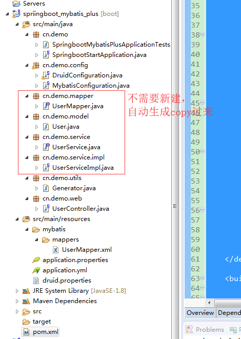
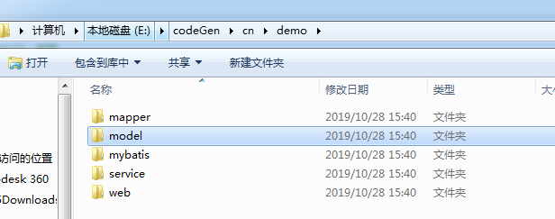
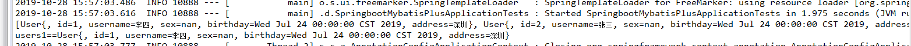

本节版本虽然只用到了基本特性，但可以满足大部分的增删改查。
一、环境准备
SpringBoot 1.5.10.RELEASE
Mybatis-Plus 2.1.9
Mybatis-Plus 官方地址：http://mp.baomidou.com/
pom依赖，为了方便，全贴出来吧：
<project xmlns="http://maven.apache.org/POM/4.0.0" xmlns:xsi="http://www.w3.org/2001/XMLSchema-instance" xsi:schemaLocation="http://maven.apache.org/POM/4.0.0 http://maven.apache.org/xsd/maven-4.0.0.xsd">
<modelVersion>4.0.0</modelVersion>
<groupId>cn.demo</groupId>
<artifactId>spriingboot_mybatis_plus</artifactId>
<version>0.0.1-SNAPSHOT</version>
<parent>
<groupId>org.springframework.boot</groupId>
<artifactId>spring-boot-starter-parent</artifactId>
<version>1.5.10.RELEASE</version>
<relativePath/> <!-- lookup parent from repository -->
</parent>
<properties>
<project.build.sourceEncoding>UTF-8</project.build.sourceEncoding>
<project.reporting.outputEncoding>UTF-8</project.reporting.outputEncoding>
<java.version>1.8</java.version>
<log4j.version>1.3.8.RELEASE</log4j.version>
<druid.version>1.0.26</druid.version>
<mybatis-plus.version>2.1.9</mybatis-plus.version>
<mybatisplus-spring-boot-starter.version>1.0.5</mybatisplus-spring-boot-starter.version>
</properties>
<dependencies>
<dependency>
<groupId>org.springframework.boot</groupId>
<artifactId>spring-boot-starter</artifactId>
</dependency>
<!-- druid数据库连接池 -->
<dependency>
<groupId>com.alibaba</groupId>
<artifactId>druid</artifactId>
<version>${druid.version}</version>
</dependency>
<!-- mysql connector -->
<dependency>
<groupId>mysql</groupId>
<artifactId>mysql-connector-java</artifactId>
<scope>runtime</scope>
</dependency>
<!-- Mybatis-plus -->
<dependency>
<groupId>com.baomidou</groupId>
<artifactId>mybatisplus-spring-boot-starter</artifactId>
<version>${mybatisplus-spring-boot-starter.version}</version>
</dependency>
<dependency>
<groupId>com.baomidou</groupId>
<artifactId>mybatis-plus</artifactId>
<version>${mybatis-plus.version}</version>
</dependency>
<dependency>
<groupId>org.springframework.boot</groupId>
<artifactId>spring-boot-starter-test</artifactId>
<scope>test</scope>
</dependency>
</dependencies>
<build>
<plugins>
<plugin>
<groupId>org.springframework.boot</groupId>
<artifactId>spring-boot-maven-plugin</artifactId>
</plugin>
</plugins>
</build>
</project>先列出最初始的项目结构，至于model，mapper，service，mapper xml，controller之后都自动生成出来。

三、代码详情
数据准备
在test库建一个user表。
CREATE TABLE `user` (
`id` bigint(20) NOT NULL COMMENT '用户ID',
`name` varchar(50) DEFAULT NULL COMMENT '用户名',
PRIMARY KEY (`id`)
) ENGINE=InnoDB DEFAULT CHARSET=utf8 COMMENT='用户表'
insert into `user` (`id`, `name`) values('1','张三');
insert into `user` (`id`, `name`) values('2','李四');
insert into `user` (`id`, `name`) values('3','王五')
application.yml:
spring:
datasource:
driver-class-name: com.mysql.jdbc.Driver
url: jdbc:mysql://192.168.1.20:3306/test
username: root
password: root123
mybatis-plus:
# 如果是放在src/main/java目录下 classpath:/com/yourpackage/*/mapper/*Mapper.xml
# 如果是放在resource目录 classpath:/mapper/*Mapper.xml
mapper-locations: classpath:mybatis/mappers/*Mapper.xml
#实体扫描，多个package用逗号或者分号分隔
typeAliasesPackage: cn.demo.model
global-config:
#主键类型 0:"数据库ID自增", 1:"用户输入ID",2:"全局唯一ID (数字类型唯一ID)", 3:"全局唯一ID UUID";
id-type: 0
#字段策略 0:"忽略判断",1:"非 NULL 判断"),2:"非空判断"
field-strategy: 1
#驼峰下划线转换
#db-column-underline: true
#刷新mapper 调试神器
refresh-mapper: true
#数据库大写下划线转换
#capital-mode: true
#Sequence序列接口实现类配置
#key-generator: com.baomidou.mybatisplus.incrementer.OracleKeyGenerator
#逻辑删除配置（下面3个配置）
#logic-delete-value: 1
#logic-not-delete-value: 0
#sql-injector: com.baomidou.mybatisplus.mapper.LogicSqlInjector
#自定义填充策略接口实现
#meta-object-handler: com.baomidou.springboot.MyMetaObjectHandler
configuration:
map-underscore-to-camel-case: true
cache-enabled: false
#配置JdbcTypeForNull
jdbc-type-for-null: 'null'
logging.level.com.demo.mapper: debugdruid.properties:
#--------------------------
# 下面为连接池的补充设置，应用到上面所有数据源中
# 初始化大小，最小，最大
spring.datasource.initialSize=5
spring.datasource.minIdle=1
spring.datasource.maxActive=50
# 配置获取连接等待超时的时间
spring.datasource.maxWait=60000
# 配置间隔多久才进行一次检测，检测需要关闭的空闲连接，单位是毫秒
spring.datasource.timeBetweenEvictionRunsMillis=60000
# 配置一个连接在池中最小生存的时间，单位是毫秒
spring.datasource.minEvictableIdleTimeMillis=300000
spring.datasource.validationQuery=SELECT 1 FROM DUAL
spring.datasource.testWhileIdle=true
spring.datasource.testOnBorrow=false
spring.datasource.testOnReturn=false
# 打开PSCache，并且指定每个连接上PSCache的大小
spring.datasource.poolPreparedStatements=false
#spring.datasource.maxPoolPreparedStatementPerConnectionSize=20
# 配置监控统计拦截的filters，去掉后监控界面sql无法统计，'wall'用于防火墙
spring.datasource.filters=stat,wall,log4j
# 通过connectProperties属性来打开mergeSql功能；慢SQL记录
spring.datasource.connectionProperties=druid.stat.mergeSql=true;druid.stat.slowSqlMillis=5000
# 合并多个DruidDataSource的监控数据
#spring.datasource.useGlobalDataSourceStat=trueDruidConfiguration.java
由于这里不用controller接口方式演示，使用test演示，没引入starter-web，所以druid的servlet暂时注释，有要用的可以打开，加入依赖即可。
package cn.demo.config;
import com.alibaba.druid.pool.DruidDataSource;
import com.alibaba.druid.support.http.StatViewServlet;
import com.alibaba.druid.support.http.WebStatFilter;
import org.springframework.boot.context.properties.ConfigurationProperties;
import org.springframework.boot.web.servlet.FilterRegistrationBean;
import org.springframework.boot.web.servlet.ServletRegistrationBean;
import org.springframework.context.annotation.Bean;
import org.springframework.context.annotation.Configuration;
import org.springframework.context.annotation.PropertySource;
import javax.sql.DataSource;
/**
* @ClassName cn.saytime.config.DruidConfiguration
* @Description
*/
@Configuration
@PropertySource(value = "classpath:druid.properties")
public class DruidConfiguration {
@Bean(destroyMethod = "close", initMethod = "init")
@ConfigurationProperties(prefix = "spring.datasource")
public DataSource druidDataSource() {
return new DruidDataSource();
}
//
// /**
// * 注册一个StatViewServlet
// *
// * @return
// */
// @Bean
// public ServletRegistrationBean druidStatViewServlet() {
// //org.springframework.boot.context.embedded.ServletRegistrationBean提供类的进行注册.
// ServletRegistrationBean servletRegistrationBean = new ServletRegistrationBean(new StatViewServlet(), "/druid/*");
//
// //添加初始化参数：initParams
// //白名单：
// servletRegistrationBean.addInitParameter("allow", "127.0.0.1");
// //IP黑名单 (存在共同时，deny优先于allow) : 如果满足deny的话提示:Sorry, you are not permitted to view this page.
//// servletRegistrationBean.addInitParameter("deny", "192.168.1.73");
// //登录查看信息的账号密码.
// servletRegistrationBean.addInitParameter("loginUsername", "admin");
// servletRegistrationBean.addInitParameter("loginPassword", "123456");
// //是否能够重置数据.
// servletRegistrationBean.addInitParameter("resetEnable", "false");
// return servletRegistrationBean;
// }
//
// /**
// * 注册一个：filterRegistrationBean
// *
// * @return
// */
// @Bean
// public FilterRegistrationBean druidStatFilter() {
//
// FilterRegistrationBean filterRegistrationBean = new FilterRegistrationBean(new WebStatFilter());
//
// //添加过滤规则.
// filterRegistrationBean.addUrlPatterns("/*");
//
// //添加不需要忽略的格式信息.
// filterRegistrationBean.addInitParameter("exclusions", "*.js,*.gif,*.jpg,*.png,*.css,*.ico,/druid/*");
// return filterRegistrationBean;
// }
}MybatisConfiguration.java :注意这里的MapperScan，换成你项目mapper文件夹路径
package cn.demo.config;
import com.baomidou.mybatisplus.plugins.PaginationInterceptor;
import org.mybatis.spring.annotation.MapperScan;
import org.springframework.context.annotation.Bean;
import org.springframework.context.annotation.Configuration;
/**
* @author zh
* @ClassName cn.saytime.config.MybatisConfiguration
* @Description
*/
@Configuration
@MapperScan("cn.demo.mapper*")
public class MybatisConfiguration {
/*
* 分页插件，自动识别数据库类型
* 多租户，请参考官网【插件扩展】
*/
@Bean
public PaginationInterceptor paginationInterceptor() {
return new PaginationInterceptor();
}
/*
* oracle数据库配置JdbcTypeForNull
* 参考：https://gitee.com/baomidou/mybatisplus-boot-starter/issues/IHS8X
不需要这样配置了，参考 yml:
mybatis-plus:
confuguration
dbc-type-for-null: 'null'
@Bean
public ConfigurationCustomizer configurationCustomizer(){
return new MybatisPlusCustomizers();
}
class MybatisPlusCustomizers implements ConfigurationCustomizer {
@Override
public void customize(org.apache.ibatis.session.Configuration configuration) {
configuration.setJdbcTypeForNull(JdbcType.NULL);
}
}
*/
}自动生成代码工具类Generator.java(换成数据库链接以及输出路径即可。)
package cn.demo.utils;
import com.baomidou.mybatisplus.generator.AutoGenerator;
import com.baomidou.mybatisplus.generator.config.DataSourceConfig;
import com.baomidou.mybatisplus.generator.config.GlobalConfig;
import com.baomidou.mybatisplus.generator.config.PackageConfig;
import com.baomidou.mybatisplus.generator.config.StrategyConfig;
import com.baomidou.mybatisplus.generator.config.rules.DbType;
import com.baomidou.mybatisplus.generator.config.rules.NamingStrategy;
//根据表名自动生成java文件
public class Generator {
public static void main(String[] args) {
String packageName = "cn.demo";
boolean serviceNameStartWithI = false;
generateByTables(serviceNameStartWithI, packageName, "li", "test", "user");//li作者。test数据库名。user表名。
System.out.println("completed...");
}
/**
* @param serviceNameStartWithI
* @param packageName 包名
* @param author 作者
* @param database 数据库名
* @param tableNames 表名
*/
private static void generateByTables(boolean serviceNameStartWithI, String packageName, String author, String database, String... tableNames) {
GlobalConfig config = new GlobalConfig();
String dbUrl = "jdbc:mysql://192.168.1.20:3306/" + database + "?useUnicode=true&characterEncoding=utf8&autoReconnect=true&useSSL=false";
DataSourceConfig dataSourceConfig = new DataSourceConfig();
dataSourceConfig.setDbType(DbType.MYSQL)
.setUrl(dbUrl)
.setUsername("root")
.setPassword("root123")
.setDriverName("com.mysql.jdbc.Driver");
StrategyConfig strategyConfig = new StrategyConfig();
strategyConfig
.setCapitalMode(true)
.setEntityLombokModel(false)
.setDbColumnUnderline(true)
.setNaming(NamingStrategy.underline_to_camel)
// .setSuperMapperClass("cn.saytime.mapper.BaseMapper")
.setInclude(tableNames);//修改替换成你需要的表名，多个表名传数组
config.setActiveRecord(false)
.setAuthor(author)
.setOutputDir("e:\\codeGen")//生成的java到文件夹下
.setFileOverride(true)
.setEnableCache(false);
if (!serviceNameStartWithI) {
config.setServiceName("%sService");
}
new AutoGenerator().setGlobalConfig(config)
.setDataSource(dataSourceConfig)
.setStrategy(strategyConfig)
.setPackageInfo(
new PackageConfig()
.setParent(packageName)
.setController("web")//生成的代码到文件夹下cn.demo.web
.setEntity("model")
.setMapper("mapper")
.setService("service")
.setServiceImpl("service.impl")
.setXml("mybatis.mappers")
).execute();
}
}执行Generator Main方法，到输出路径，可以看到代码文件已经生成好了:

将model,mapper,service拷贝到cn.demo目录下，将mybatis/mappers文件夹拷贝到src/main/resources目录下.
SpringbootMybatisPlusApplicationTests.java
package cn.demo;
import org.junit.Test;
import org.junit.runner.RunWith;
import org.springframework.beans.factory.annotation.Autowired;
import org.springframework.boot.test.context.SpringBootTest;
import org.springframework.test.context.junit4.SpringRunner;
import cn.demo.model.User;
import cn.demo.service.UserService;
import java.util.List;
@RunWith(SpringRunner.class)
@SpringBootTest
public class SpringbootMybatisPlusApplicationTests {
@Autowired
private UserService userService;
@Test
public void contextLoads() {
// 所有用户
List<User> users = userService.selectList(null);
System.out.println(users);
//查询id=1的用户
User user = userService.selectById(1);
System.out.println("users1=="+user);
}
}输出结果：

六、更多使用方式
列举几种常用的增删改查方式，其实最快的方式就是去官网看示例。
查询id=1的用户
User user = userService.selectById(1);
查询name=张三的用户
User user = userService.selectOne(new EntityWrapper<User>().eq("name", "张三"));
查询id>1的用户
List<User> userList = userService.selectList(new EntityWrapper<User>().gt("id", 1));
修改id=1的用户名
User user = userService.selectById(1);
user.setName("张三2");
boolean b = userService.updateById(user);
添加用户
User user = new User();
user.setName("赵六");
boolean insert = userService.insert(user);
删除用户
boolean b = userService.deleteById(1);
分页查询用户
查询id>1 每页一条数据，第二页，也就是第三条数据。
Page<User> userPage = new Page<>();
userPage.setCurrent(2);
userPage.setSize(1);
userService.selectPage(userPage, new EntityWrapper<User>().gt("id", 1));
List<User> userList = userPage.getRecords();
System.out.println(userList);
[User{, id=3, name=王五}]